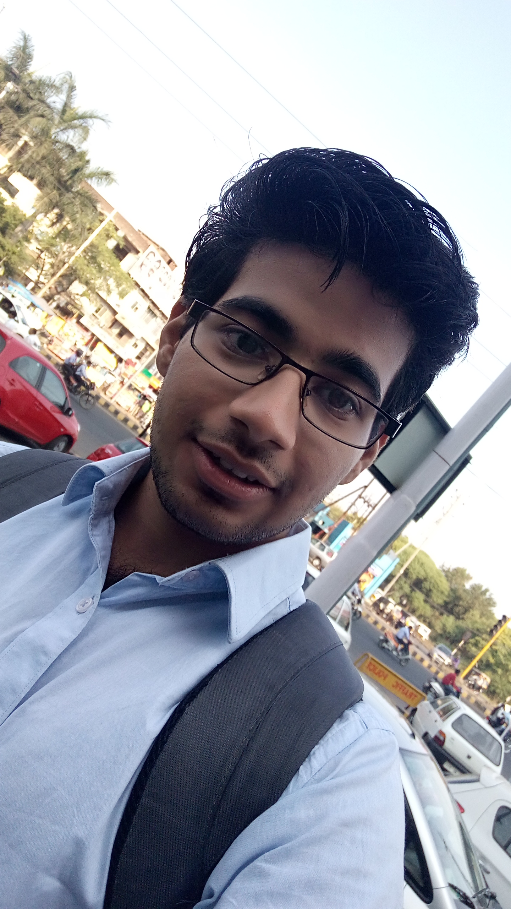
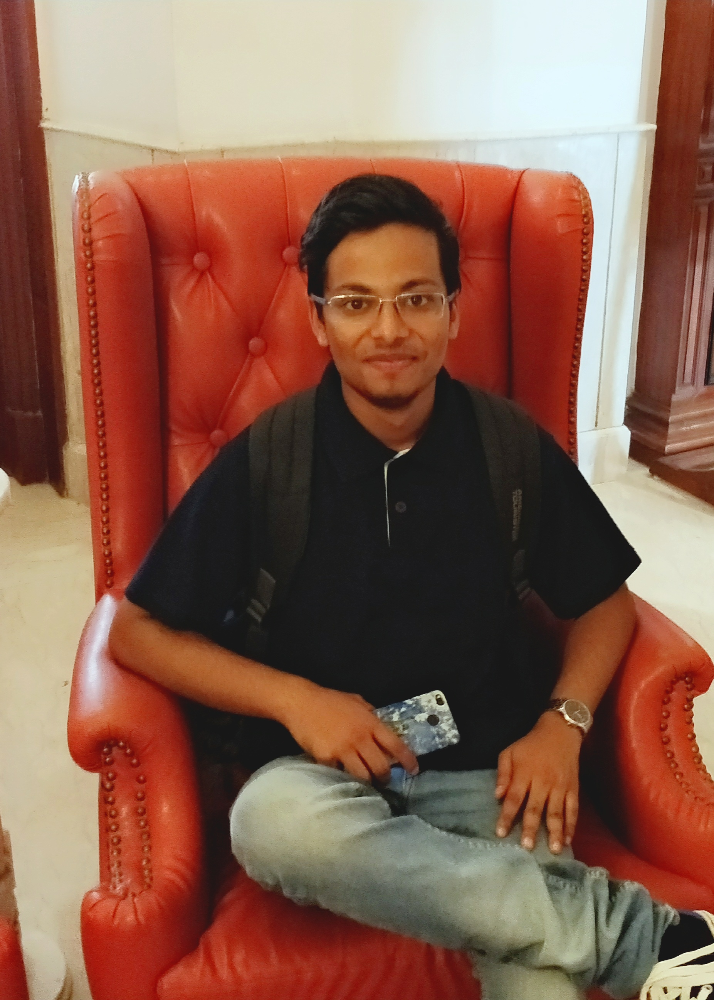

| About Us | Our Projects | Join Us | Support Us | Member Login | Feedback |
|---|
|  |  |  |
| Nayan Verma | Kumar Kushagra | Ishita Sinha |
|---|---|---|
Nayan Verma a man with big heart and fabulous mind is amongs the founder of the being human.He brings nice ideas for the foundation with himself nd help us in generating the funds. |
Kumar Kushagra with his great ability of leadership leads the being human foundation.His this quality has helped a lot in uplifting the organisation.he plays the most important role in organising the activities |
Ishita Sinha a very kind and generous person who always suported the womens in every aspects since childhood, is one of the leading members of foundation.Her great experience is helping the foundation a lot. |